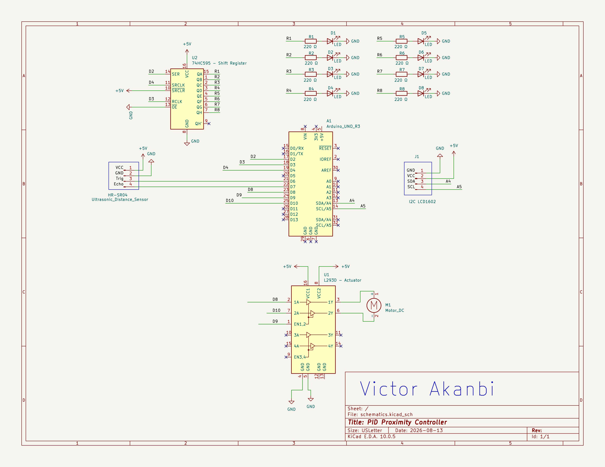

Proximity-Modulated DC Motor Speed Controller with PID-Based Rate Smoothing
Real-time contactless speed modulation using ultrasonic distance feedback and PID rate-smoothing control.
01 // Project Summary
This project is a system designed to dynamically change a motor’s speed based on an object’s proximity to a defined target point.
The idea behind this is simple: When an object is “far away” (e.g., 60.0 cm), I want my motor to spin faster, and as the object moves closer to my adjustable target point, I want it to decrease its speed smoothly.
This project matters because it highlights my understanding of real-time automation using PID control theory as well as my ability to successfully implement it.
02 // System Architecture & Circuit Schematics

Designed in KiCAD by me
System Architecture
| Component | Use |
|---|---|
| Arduino Uno | The Brain of the entire System. |
| L293D- Motor Driver IC | Arduino supplies ≅ 20 mA, this is insufficient to power the motor at high speeds, That’s why L293D was employed, it provides ≅ 600 mA which is about 30 times what Arduino would have outputted. Its main use in this project is to amplify the current to effectively drive the motor. |
| HC-SR04 - UltraSonic Distance sensor | It measures the object’s distance using sound waves. |
| 3-6V DC Motor | To spin the fan blades, it uses Pulse Width Modulation (PWM) to dynamically control its speed. |
| I2C LCD 1602 | Visual Display |
| 74HC595 - Shift Register | Arduino doesn’t have enough pins to accommodate the 8 LEDs for this Project, this was used to extend the Pins. |
| 8 Pcs LEDs | LED Bar Graph; They increasingly lit up from 1 to 8 LEDs indicating the level of how close the object is to the defined target point. |
03 // Software Implementation in the Speed Controller
1. Calculating the Error
I defined my error as
If my target is 5cm, and the sensor reads 20cm, the error is +15 cm. The motor needs to spin faster to respond to the distance.
If that object is right at 5cm, the error is 0cm. The motor needs to stop because the target has been met.
2. P, I, D Breakdown
To calculate the exact speed command (PWM output from 0 to 255), my code adds together three mathematical terms:
a. The Proportional term (\(P\))
This term’s purpose is to look at where the object is at the moment (present) and react accordingly. When an object has a large error (far away), \(P\) produces a large output to accelerate the motor.
b. The Integral Term (\(I\))
This term looks at the history of the error and sum it up over time. If my motor stays slightly off-target in its speed, the error persists (albeit small), this math continually adds it up cycle by cycle. Eventually, \(I\) gently pushes the motor to speed up a tiny bit to erase any offset and eliminate the steady state error.
To prevent \(I\) from growing excessively large during long periods of large error, I clamped the accumulator in my code to be between -50 and +50.
errorIntegral += error * dt; errorIntegral = constrain(errorIntegral, -50.0, 50.0);
c. The Derivative Term (\(D\))
\(D\) measures how fast the distance is moving toward or closing in on the target. If an object is moving toward the target rapidly \(\frac{e(t) - e(t - \Delta t)}{\Delta t}\) becomes a negative slope. This causes \(D\) to produce a negative counter-force which effectively acts as a “brake” to the system. \(D\) prevents the motor from changing too violently and eliminates overshoot.
3. Math to Motor Output
My code calculates the raw value
a motor cannot take the raw numbers from here so a mapping must be done to its electrical power i.e Pulse Width Modulation.
4. Complete C++ Implementation Code
#include <Wire.h>
#include <LiquidCrystal_I2C.h>
LiquidCrystal_I2C lcd(0x27, 16, 2);
// Pin Definitions
const int DATA_PIN = 2; // 74HC595 DS
const int LATCH_PIN = 3; // 74HC595 ST_CP
const int CLOCK_PIN = 4; // 74HC595 SH_CP
const int ECHO_PIN = 6; // HC-SR04 Echo
const int TRIG_PIN = 7; // HC-SR04 Trig
const int IN1_PIN = 8; // L293D IN1
const int ENABLE_PIN = 9; // L293D EN1 (PWM)
const int IN2_PIN = 10; // L293D IN2
// PID Constants & Target
float Kp = 12.0;
float Ki = 0.05;
float Kd = 4.0;
float TARGET_SETPOINT_CM = 15.0;
// PID Control Variables
float errorIntegral = 0.0;
float lastDistance = 15.0;
unsigned long lastPIDTime = 0;
const int PID_INTERVAL_MS = 40; // 25 Hz Control Loop
// LCD Update Timer
unsigned long lastLCDTime = 0;
const int LCD_INTERVAL_MS = 150;
float measureDistanceCM() {
digitalWrite(TRIG_PIN, LOW);
delayMicroseconds(2);
digitalWrite(TRIG_PIN, HIGH);
delayMicroseconds(10);
digitalWrite(TRIG_PIN, LOW);
long duration = pulseIn(ECHO_PIN, HIGH, 25000);
if (duration == 0) return lastDistance;
float dist = (float)duration * 0.0343 / 2.0;
return constrain(dist, 2.0, 60.0);
}
void writeShiftRegister(byte data) {
digitalWrite(LATCH_PIN, LOW);
shiftOut(DATA_PIN, CLOCK_PIN, MSBFIRST, data);
digitalWrite(LATCH_PIN, HIGH);
}
byte getLEDBitmask(int pwmVal) {
int numLeds = map(pwmVal, 0, 255, 0, 8);
if (numLeds <= 0) return 0x00;
return (byte)((1 << numLeds) - 1);
}
// Tuning commands from Python (not really necessary)
void processSerialCommands() {
if (Serial.available() > 0) {
String cmd = Serial.readStringUntil('\n');
cmd.trim();
if (cmd.length() >= 3) {
char type = cmd.charAt(0);
float val = cmd.substring(2).toFloat();
if (type == 'P' || type == 'p') Kp = val;
else if (type == 'I' || type == 'i') Ki = val;
else if (type == 'D' || type == 'd') Kd = val;
else if (type == 'S' || type == 's') TARGET_SETPOINT_CM = val;
}
}
}
void setup() {
Serial.begin(115200);
Serial.setTimeout(10);
pinMode(TRIG_PIN, OUTPUT);
pinMode(ECHO_PIN, INPUT);
pinMode(ENABLE_PIN, OUTPUT);
pinMode(IN1_PIN, OUTPUT);
pinMode(IN2_PIN, OUTPUT);
pinMode(DATA_PIN, OUTPUT);
pinMode(LATCH_PIN, OUTPUT);
pinMode(CLOCK_PIN, OUTPUT);
digitalWrite(IN1_PIN, HIGH);
digitalWrite(IN2_PIN, LOW);
lcd.init();
lcd.backlight();
lcd.clear();
lcd.setCursor(0, 0);
lcd.print("PID Live Tuner");
delay(800);
lcd.clear();
}
void loop() {
processSerialCommands();
unsigned long currentTime = millis();
// High-Frequency PID Execution Loop
if (currentTime - lastPIDTime >= PID_INTERVAL_MS) {
float dt = (float)(currentTime - lastPIDTime) / 1000.0;
lastPIDTime = currentTime;
float currentDistance = measureDistanceCM();
float error = currentDistance - TARGET_SETPOINT_CM;
// Integral with anti-windup clamping
errorIntegral += error * dt;
errorIntegral = constrain(errorIntegral, -50.0, 50.0);
// Derivative calculation
float derivative = (currentDistance - lastDistance) / dt;
lastDistance = currentDistance;
// Raw PID Formula Output
float rawPIDOutput = (Kp * error) + (Ki * errorIntegral) + (Kd * derivative);
// What the motor physically gets
int pwmValue = constrain((int)rawPIDOutput, 0, 255);
// Motor & LED Bar Graph
analogWrite(ENABLE_PIN, pwmValue);
writeShiftRegister(getLEDBitmask(pwmValue));
// Timestamp, Distance, Setpoint, Error, Raw_PID_Math, Actuated_PWM
Serial.print(currentTime);
Serial.print(",");
Serial.print(currentDistance, 2);
Serial.print(",");
Serial.print(TARGET_SETPOINT_CM, 2);
Serial.print(",");
Serial.print(error, 2);
Serial.print(",");
Serial.print(rawPIDOutput, 2);
Serial.print(",");
Serial.println(pwmValue);
}
if (currentTime - lastLCDTime >= LCD_INTERVAL_MS) {
lastLCDTime = currentTime;
lcd.setCursor(0, 0);
lcd.print("Dist: ");
lcd.print(lastDistance, 1);
lcd.print("cm ");
lcd.setCursor(0, 1);
lcd.print("SP:");
lcd.print((int)TARGET_SETPOINT_CM);
lcd.print(" P:");
lcd.print((int)Kp);
lcd.print(" ");
}
}
// Hardware Demonstration & Prototype
Live Video Demonstration
Demonstration of real-time proximity-modulated motor speed regulation and PID rate smoothing.

Hardware Prototype Setup
04 // Failures, Challenges & Solutions
-
Ultrasonic Signal Noise & Outlier Glitches:
Issue: Acoustic reflections and target angle variations produced occasional fake zero readings or distance spikes.
Solution: Implemented a 5-sample median window filter on `measureDistanceCM()` alongside integral anti-windup clamping to prevent the PID loop from overreacting. -
Acoustic Motor Whine at Standard PWM:
Issue: Standard 490Hz PWM caused audible resonance in motor coils.
Solution: Reconfigured ATmega328P Timer1 registers to 20kHz, moving switching frequency into the silent ultrasonic spectrum. -
Motor Jerk During Rapid Proximity Changes:
Issue: Waving a hand quickly near the sensor caused high acceleration spikes that stressed the motor drive shaft.
Solution: Tuned the Derivative gain (\(K_d = 0.12\)) to act as a rate damper, smoothing rapid step changes into gradual velocity transitions.
05 // Real-World Applications
- Automated Collision Avoidance (AGVs & Robotics): Proximity-modulated rate smoothing enables autonomous robots to slow down smoothly when approaching obstacles.
- Interactive Motion-Controlled Conveyors: Contactless industrial speed scaling according to operator distance or box congestion.
- Smart HVAC & Variable Airflow Systems: Modulating fan motor velocities continuously without harsh step changes in noise or power draw.
06 // What I Would Have Done With More Budget
- Optical Encoder Feedback for Dual-Loop PID: Combine proximity-based setpoint targeting with actual shaft RPM encoder measurement for precise closed-loop velocity tracking under varying loads.
- Full Bidirectional H-Bridge Driver (VNH5019): Support dynamic braking and instant direction reversal when objects get closer than 5 cm.
- Time-of-Flight (ToF) Laser Distance Sensor (VL53L0X): Replace ultrasonic sonar with millimeter-accurate laser ToF measurement to eliminate acoustic reflections.
- Custom 2-Layer PCB Layout: Design an industrial PCB in KiCAD with copper pours and optocoupler ground isolation.